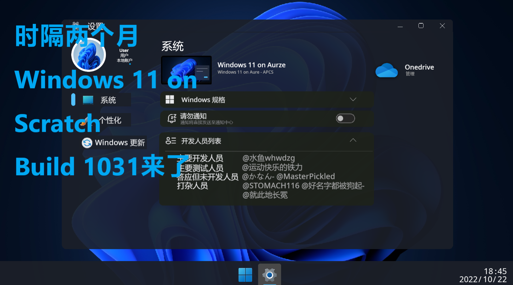
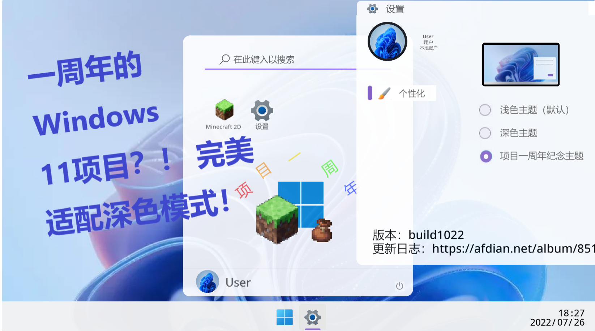

全部视频
这里包含了滄海水魚所有的视频
-

[已失效]上学路
上学路上随手一拍,一边骑车,一边靠麒麟臂拍的,有点抖
-
[已失效]论如何当Bing的猫
论如何当Bing的猫
-
[已失效]Windows11文件资源管理器和桌面环境分离了
看什么看,没啥好看的
-
[已失效]Windows 11 on Scratch 的一个新更新！——Build1054
可以到爱发电搜水鱼whwdzg看更新日志和下载。
话说微软开始休假了,我beta版本的win11bug能啥时候修啊?
然后求个三连?有人会看吗? -
[已失效]Windows 11 on Scratch Build 1037 宣传片
Windows11-Build1037(2022/11/10)
Windows 11:
1.现在将开始菜单更改为鼠标落下离开后出现。
2.可通过滑动开始按钮打开开始菜单。
3.现在可以将标题栏移到顶部来全屏。
4.开始菜单新增推荐的项目。(暂无应用)
5.添加文件资源管理器,默认固定在任务栏。(暂不可用)
6.增加了开始按钮,开始菜单中的应用的点击反馈。
7.更改Windows更新图标以匹配箭头方向。
8.为开尖适配柔和彩虹色。
9.增加讲述人(因服务器连接问题,无法使用)
Minecraft 2D -
[已失效]致曾经的那些还在网易版的朋友们
致曾经的那些还在网易版的朋友们,不知道他们现在还玩不玩。
(其实是水视频) -

[已失效]练习时长两个月半的Windows 11 on Scratch - Build 1031
Windows11-Build1031(2022/10/22)
Windows 11:
1.修复了启动动画衔接问题。
2.设置图标修改为更高清的。
3.更改Windows更新图标。
4.在设置中添加开发人员名单。
5.在设置中添加Windows更新(暂无法使用)。
Minecraft 2D 1.1.2:
6.更改所有开关/滑块为基岩版风格。
7.添加黑白徽标跟随系统开关。
8.重写了关于页面。
9.修复了使用触摸按键会穿方块的问题。
10.增加玩家掉入虚空死亡提示。
11.增加无基岩世界生成。
长期下载:
1.百度网盘:
https://pan.baidu.com/s/1whpWrKbz7VRjTID45FH1zg?pwd=am6h
提取码:am6h
2.坚果云(推荐):
https://www.jianguoyun.com/p/DbxQOB8QkeTjChieo8wEIAA -

[已失效]Windows 11 on Scratch Build 1026 终于更新啦！！！
详细内容详见爱发电:《Windows 11 with Minecraft 2D》|水鱼whwdzg的作品集|爱发电(afdian.net)
下载地址:
1.百度网盘:
https://pan.baidu.com/s/1whpWrKbz7VRjTID45FH1zg?pwd=am6h
提取码:am6h
2.坚果云(推荐):
https://www.jianguoyun.com/p/DbxQOB8QkeTjChieo8wEIAA -

看不惯朋友怎么办？和谐有爱的小方法！
就是这人 ->> @STOMACH116 <<-
都是熟人之间的玩笑啊~ -

[已失效]一周年的Windows 11 on Scratch！完美适配深色模式！
详细内容详见爱发电:《Windows 11 with Minecraft 2D》|水鱼whwdzg的作品集|爱发电(afdian.net)
这一年时间基本都是在QQ群里发布,这几天一周年,打算公开的。
下载地址:
1.百度网盘:
https://pan.baidu.com/s/1whpWrKbz7VRjTID45FH1zg?pwd=am6h
提取码:am6h
2.坚果云(推荐):
https://www.jianguoyun.com/p/DbxQOB8QkeTjChieo8wEIAA